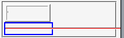

white-space: nowrap; （またはnowrap属性）で折り返しを抑制したtd要素内で、hr要素の水平線の長さが非常に短くなる。また、widthプロパティの指定を無視する。white-space: nowrap; で折り返しを抑制したブロック要素内で、hr要素のwidthプロパティを%値で指定すると親要素の幅ではなくbody要素の幅に対する%値を算出する。<style type="text/css">
hr {
background: red;
color: red;
}
</style>
<table border="2" style="width:5em;">
<tr>
<td style="white-space:nowrap;"><hr></td>
</tr>
</table>
<div style="white-space:nowrap; width:5em; border:2px solid blue;">
<hr>
</div>
td要素とdiv要素の内部にあるhr要素はどちらも親要素の幅に合わせた長さの水平線として表示されるはずです。
WinIE6.0での表示（互換モード）
N7.02での表示（互換モード）
hr要素に対して display: block; を指定することでこのバグを回避できます。ただし、この指定のためにWinIEで別のバグが発生することがあります。
<table border="2" style="width:5em;"> <tr> <td style="white-space:nowrap;"><hr style="display:block;"></td> </tr> </table> <div style="white-space:nowrap; width:5em; border:2px solid blue;"> <hr style="display:block;"> </div>
Mozilla.org Bugzillaでは以下の項目が該当します。
このバグと同じような症状を持つ別のバグがありますが（Mozバグ053Mozバグ054）、このバグとは回避法が異なります。heightプロパティを指定してもこのバグは回避できません。